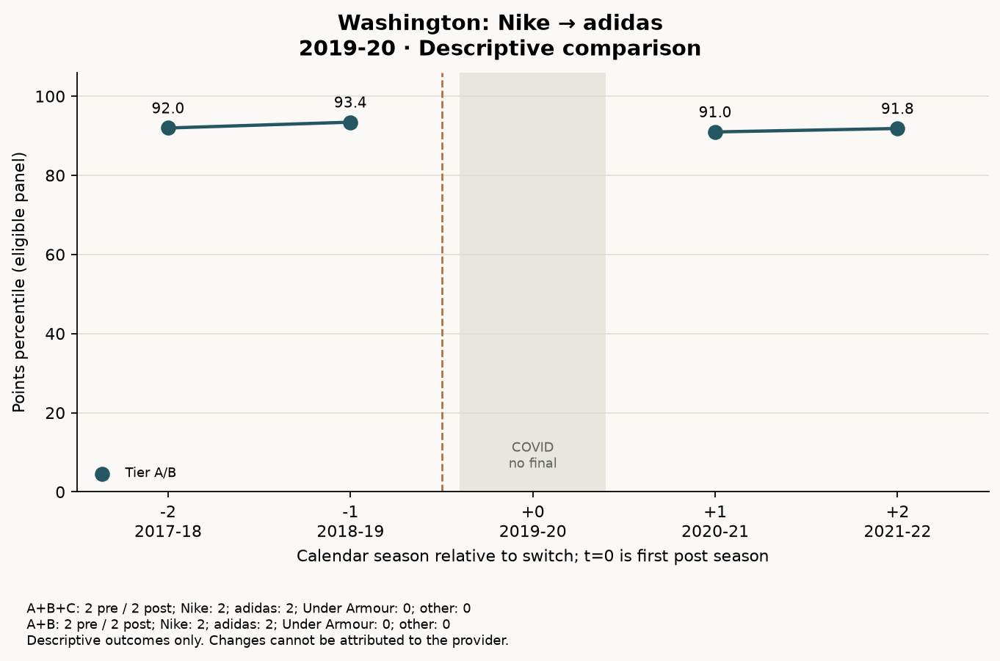
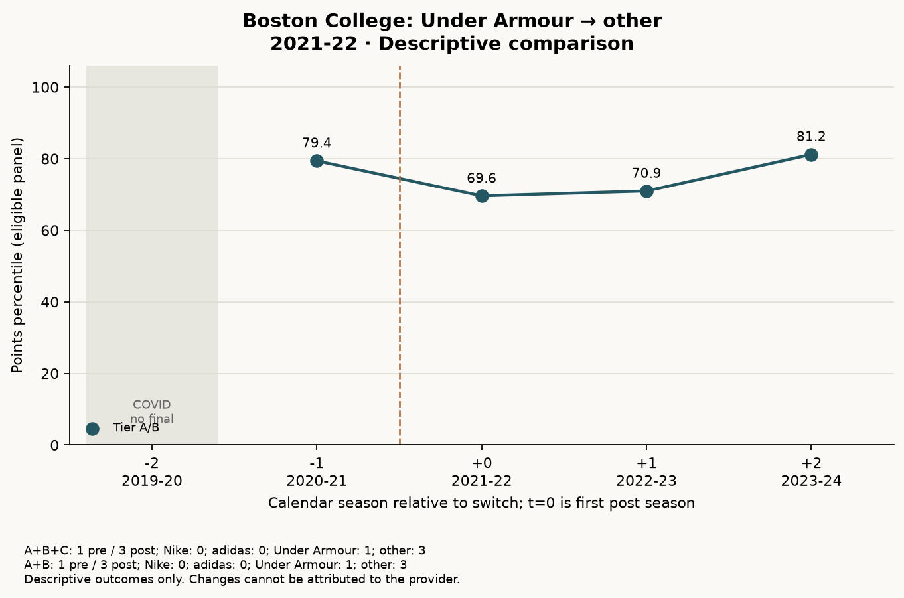
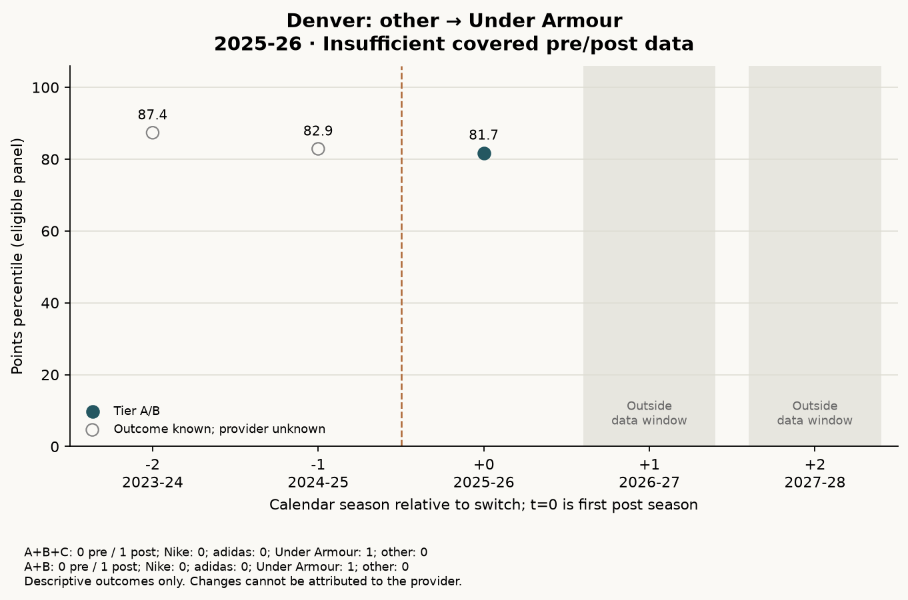
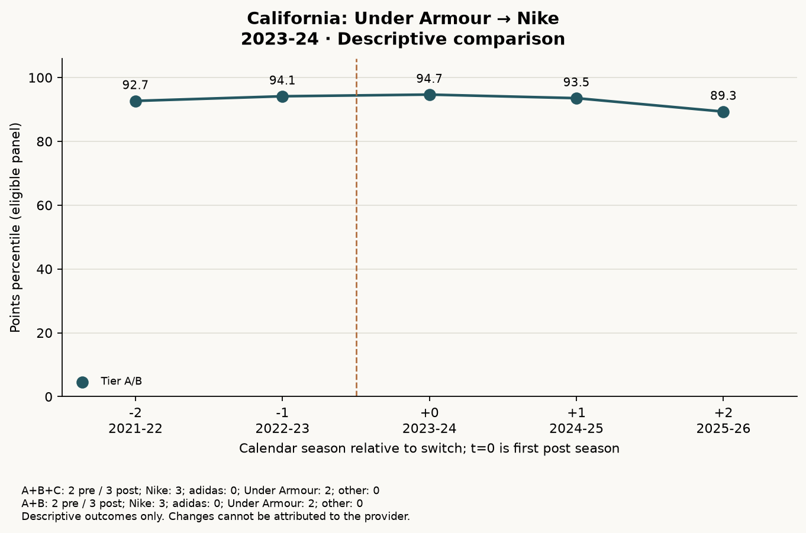
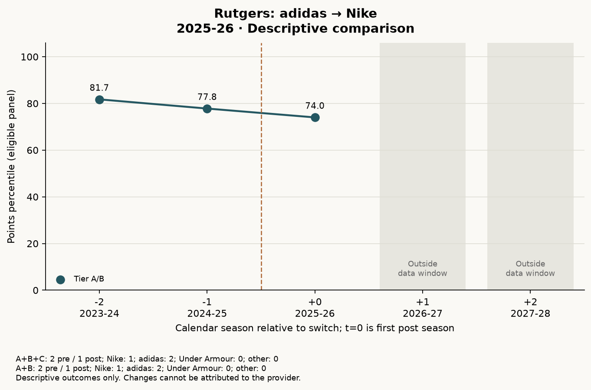
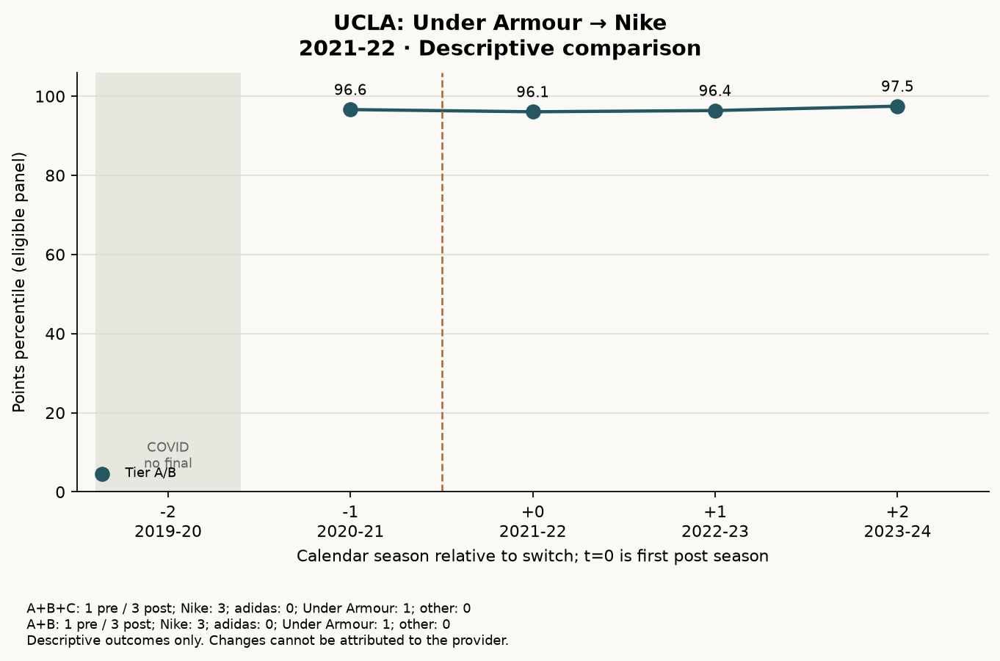
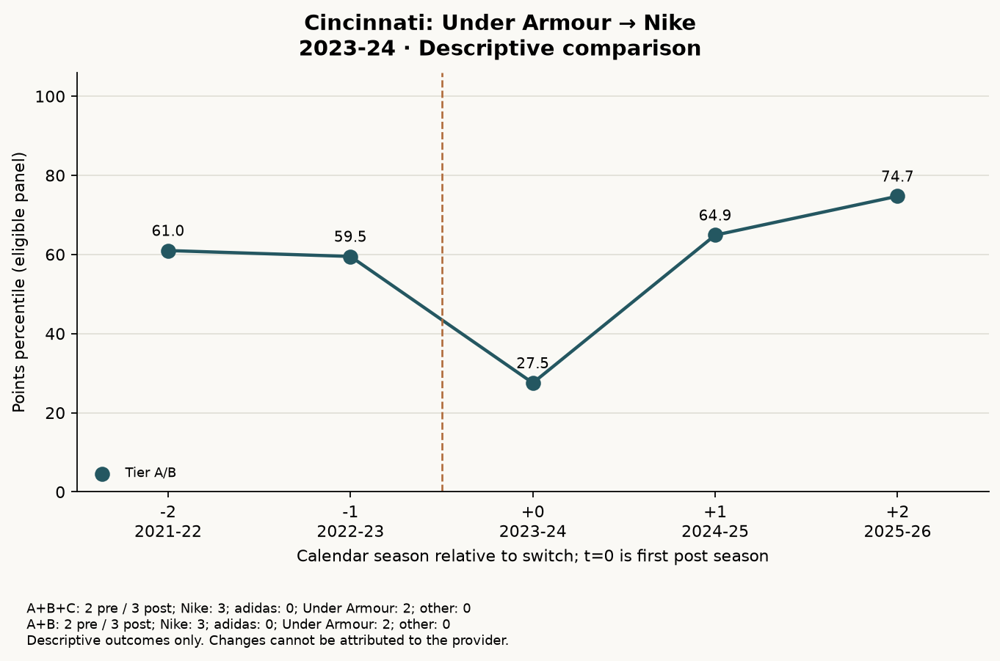
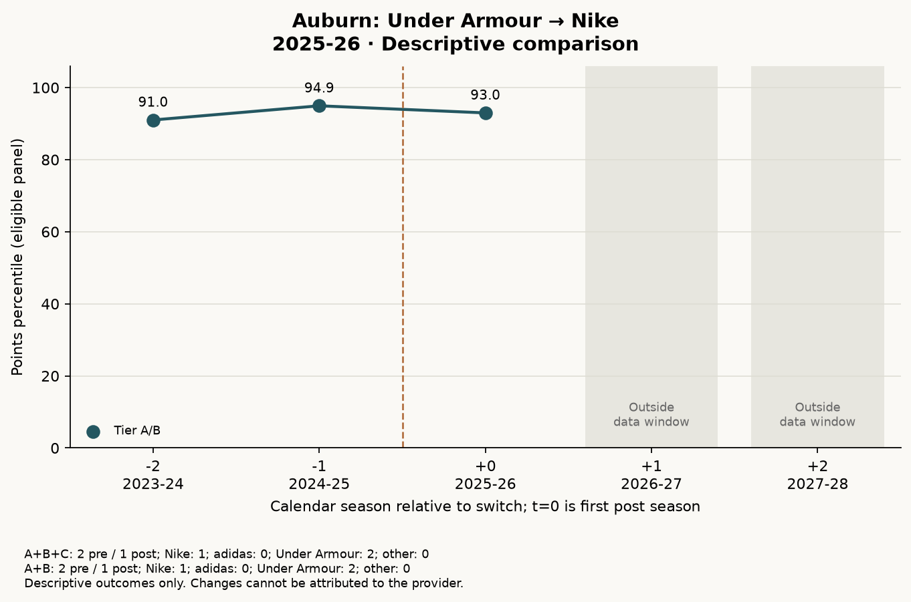
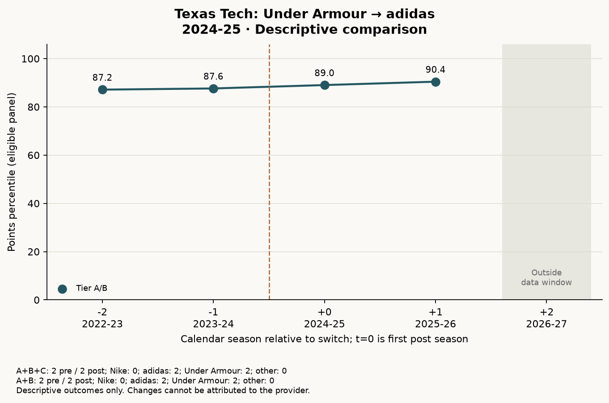
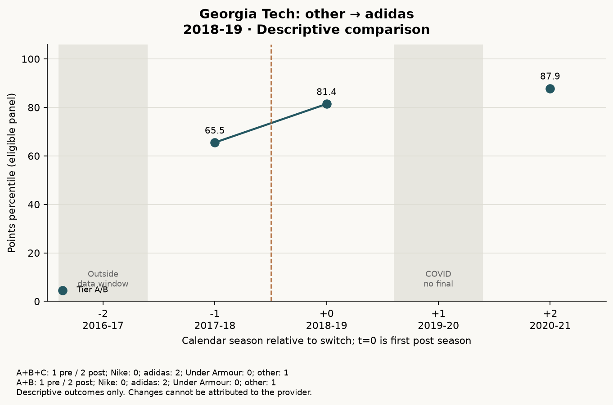

Department-level all-sports Directors' Cup outcomes; windows of up to ±2 calendar seasons. A+B: 9 of 10 usable; A+B+C: 9 of 10 usable.
The chart outcome is the annual percentile in the audited eligible school panel, including retained zero rows. It is not a causal effect and its denominator is the study's observed-school universe, not a claim to include every Division I institution. Coaching notes are a targeted screen, not an exhaustive review of every team; blank or unestablished changes do not imply stability.
Case summary CSV · Calendar-aligned observations CSV · Confounder table CSV
| School | COVID gap | Realignment | Coaching screen |
|---|---|---|---|
| Washington | 2019-20 was cancelled and has no annual final; preserve the calendar gap. 2020-21 pandemic disruptions also fall in this window. | No main-conference change in the observed 2017-18 through 2021-22 case seasons. Later Big Ten move is outside this window. | Chris Petersen stepped down and Jimmy Lake was named football head coach in December 2019, within the case window. source |
| Boston College | 2019-20 was cancelled and has no annual final; preserve the calendar gap. 2020-21 pandemic disruptions also fall in this window. | No main-conference change in the available case seasons. | Earl Grant was named men's basketball head coach in March 2021, shortly before the provider transition. source |
| Denver | No 2019-20/2020-21 season in this window. | Summit League throughout observed case seasons. A 2026-27 West Coast Conference move is noted by the official coach biography but falls beyond the available outcomes. source | Tim Bergstraser was named men's basketball head coach on April 14, 2025; his first season was 2025-26. source |
| California | No 2019-20/2020-21 season in this window. | Pac-12 to ACC in 2024-25; official ACC membership began August 2, 2024, within the post-switch window. source | Mark Madsen was named men's basketball head coach in March 2023, before the 2023-24 Nike season. source |
| Rutgers | No 2019-20/2020-21 season in this window. | No main-conference change in the available case seasons. | The targeted source documents Coquese Washington's women's basketball appointment in May 2022, outside this 2023-24 through 2027-28 window. No claim that all coaching staffs were unchanged. source |
| UCLA | 2019-20 was cancelled and has no annual final; preserve the calendar gap. 2020-21 pandemic disruptions also fall in this window. | Pac-12 throughout the observed case window, which ends in 2023-24. The subsequent 2024-25 Big Ten move is outside the window. | Mick Cronin was hired as men's basketball head coach in April 2019; his first season was the excluded 2019-20 season at the start of this case window. source |
| Cincinnati | No 2019-20/2020-21 season in this window. | American Athletic Conference to Big 12 on July 1, 2023, coincident with the Nike transition. source | Scott Satterfield was named football head coach in December 2022 and began the 2023 season during the provider and conference changes. source |
| Auburn | No 2019-20/2020-21 season in this window. | No main-conference change in the available case seasons. | Steven Pearl was named men's basketball head coach in September 2025 during the first Nike season. source |
| Texas Tech | No 2019-20/2020-21 season in this window. | Texas Tech remains in the Big 12; changes in Big 12 membership during the window may still alter competition. | Grant McCasland was named men's basketball head coach in March 2023 and began in 2023-24, within the pre-switch window. source |
| Georgia Tech | 2019-20 was cancelled and has no annual final; preserve the calendar gap. 2020-21 pandemic disruptions also fall in this window. | No main-conference change in the available case seasons. | Paul Johnson announced he would step down as football head coach in November 2018, during the first adidas season. source |
Nike → adidas; first post season 2019-20. Transition date: 2019-07-01 (effective date). Provider source

| Evidence tiers | n pre | n post | Post − pre, percentile points | n per brand |
|---|---|---|---|---|
| A+B+C | 2 | 2 | -1.30 | Nike: 2; adidas: 2; Under Armour: 0; other: 0 |
| A+B | 2 | 2 | -1.30 | Nike: 2; adidas: 2; Under Armour: 0; other: 0 |
At least one covered season on each side; descriptive only. Effective July 2019. Cancelled 2019-20 outcome excluded; do not shift event to 2020-21.
COVID: 2019-20 was cancelled and has no annual final; preserve the calendar gap. 2020-21 pandemic disruptions also fall in this window.
Realignment: No main-conference change in the observed 2017-18 through 2021-22 case seasons. Later Big Ten move is outside this window.
Coaching: Chris Petersen stepped down and Jimmy Lake was named football head coach in December 2019, within the case window. source
Under Armour → other; first post season 2021-22. Transition date: 2021-06-01 (effective date). Provider source

| Evidence tiers | n pre | n post | Post − pre, percentile points | n per brand |
|---|---|---|---|---|
| A+B+C | 1 | 3 | -5.48 | Nike: 0; adidas: 0; Under Armour: 1; other: 3 |
| A+B | 1 | 3 | -5.48 | Nike: 0; adidas: 0; Under Armour: 1; other: 3 |
At least one covered season on each side; descriptive only. 2020-21 assigned Under Armour under majority-competition rule; June 1, 2021 New Balance launch for 30 of 31 teams. First full season 2021-22; football initially excepted.
COVID: 2019-20 was cancelled and has no annual final; preserve the calendar gap. 2020-21 pandemic disruptions also fall in this window.
Realignment: No main-conference change in the available case seasons.
Coaching: Earl Grant was named men's basketball head coach in March 2021, shortly before the provider transition. source
other → Under Armour; first post season 2025-26. Transition date: 2025-06-03 (announcement date; exact first competition use not established). Provider source

| Evidence tiers | n pre | n post | Post − pre, percentile points | n per brand |
|---|---|---|---|---|
| A+B+C | 0 | 1 | Not estimated | Nike: 0; adidas: 0; Under Armour: 1; other: 0 |
| A+B | 0 | 1 | Not estimated | Nike: 0; adidas: 0; Under Armour: 1; other: 0 |
No covered pre-switch season under the documented former provider within ±2 seasons. First full academic season after June 2025 launch. Prior New Balance agreement has unresolved seasonal coverage.
COVID: No 2019-20/2020-21 season in this window.
Realignment: Summit League throughout observed case seasons. A 2026-27 West Coast Conference move is noted by the official coach biography but falls beyond the available outcomes. source
Coaching: Tim Bergstraser was named men's basketball head coach on April 14, 2025; his first season was 2025-26. source
Under Armour → Nike; first post season 2023-24. Transition date: 2023-07-01 (effective date). Provider source

| Evidence tiers | n pre | n post | Post − pre, percentile points | n per brand |
|---|---|---|---|---|
| A+B+C | 2 | 3 | -0.90 | Nike: 3; adidas: 0; Under Armour: 2; other: 0 |
| A+B | 2 | 3 | -0.90 | Nike: 3; adidas: 0; Under Armour: 2; other: 0 |
At least one covered season on each side; descriptive only.
COVID: No 2019-20/2020-21 season in this window.
Realignment: Pac-12 to ACC in 2024-25; official ACC membership began August 2, 2024, within the post-switch window. source
Coaching: Mark Madsen was named men's basketball head coach in March 2023, before the 2023-24 Nike season. source
adidas → Nike; first post season 2025-26. Transition date: 2025-07-01 (effective date). Provider source

| Evidence tiers | n pre | n post | Post − pre, percentile points | n per brand |
|---|---|---|---|---|
| A+B+C | 2 | 1 | -5.76 | Nike: 1; adidas: 2; Under Armour: 0; other: 0 |
| A+B | 2 | 1 | -5.76 | Nike: 1; adidas: 2; Under Armour: 0; other: 0 |
At least one covered season on each side; descriptive only.
COVID: No 2019-20/2020-21 season in this window.
Realignment: No main-conference change in the available case seasons.
Coaching: The targeted source documents Coquese Washington's women's basketball appointment in May 2022, outside this 2023-24 through 2027-28 window. No claim that all coaching staffs were unchanged. source
Under Armour → Nike; first post season 2021-22. Transition date: 2021-07-01 (effective date). Provider source

| Evidence tiers | n pre | n post | Post − pre, percentile points | n per brand |
|---|---|---|---|---|
| A+B+C | 1 | 3 | +0.02 | Nike: 3; adidas: 0; Under Armour: 1; other: 0 |
| A+B | 1 | 3 | +0.02 | Nike: 3; adidas: 0; Under Armour: 1; other: 0 |
At least one covered season on each side; descriptive only.
COVID: 2019-20 was cancelled and has no annual final; preserve the calendar gap. 2020-21 pandemic disruptions also fall in this window.
Realignment: Pac-12 throughout the observed case window, which ends in 2023-24. The subsequent 2024-25 Big Ten move is outside the window.
Coaching: Mick Cronin was hired as men's basketball head coach in April 2019; his first season was the excluded 2019-20 season at the start of this case window. source
Under Armour → Nike; first post season 2023-24. Transition date: 2023-07-01 (effective date). Provider source

| Evidence tiers | n pre | n post | Post − pre, percentile points | n per brand |
|---|---|---|---|---|
| A+B+C | 2 | 3 | -4.53 | Nike: 3; adidas: 0; Under Armour: 2; other: 0 |
| A+B | 2 | 3 | -4.53 | Nike: 3; adidas: 0; Under Armour: 2; other: 0 |
At least one covered season on each side; descriptive only.
COVID: No 2019-20/2020-21 season in this window.
Realignment: American Athletic Conference to Big 12 on July 1, 2023, coincident with the Nike transition. source
Coaching: Scott Satterfield was named football head coach in December 2022 and began the 2023 season during the provider and conference changes. source
Under Armour → Nike; first post season 2025-26. Transition date: 2025-07-01 (effective date). Provider source

| Evidence tiers | n pre | n post | Post − pre, percentile points | n per brand |
|---|---|---|---|---|
| A+B+C | 2 | 1 | +0.00 | Nike: 1; adidas: 0; Under Armour: 2; other: 0 |
| A+B | 2 | 1 | +0.00 | Nike: 1; adidas: 0; Under Armour: 2; other: 0 |
At least one covered season on each side; descriptive only.
COVID: No 2019-20/2020-21 season in this window.
Realignment: No main-conference change in the available case seasons.
Coaching: Steven Pearl was named men's basketball head coach in September 2025 during the first Nike season. source
Under Armour → adidas; first post season 2024-25. Transition date: 2024-07-01 (effective date). Provider source

| Evidence tiers | n pre | n post | Post − pre, percentile points | n per brand |
|---|---|---|---|---|
| A+B+C | 2 | 2 | +2.35 | Nike: 0; adidas: 2; Under Armour: 2; other: 0 |
| A+B | 2 | 2 | +2.35 | Nike: 0; adidas: 2; Under Armour: 2; other: 0 |
At least one covered season on each side; descriptive only.
COVID: No 2019-20/2020-21 season in this window.
Realignment: Texas Tech remains in the Big 12; changes in Big 12 membership during the window may still alter competition.
Coaching: Grant McCasland was named men's basketball head coach in March 2023 and began in 2023-24, within the pre-switch window. source
other → adidas; first post season 2018-19. Transition date: 2018-07-01 (effective date). Provider source

| Evidence tiers | n pre | n post | Post − pre, percentile points | n per brand |
|---|---|---|---|---|
| A+B+C | 1 | 2 | +19.12 | Nike: 0; adidas: 2; Under Armour: 0; other: 1 |
| A+B | 1 | 2 | +19.12 | Nike: 0; adidas: 2; Under Armour: 0; other: 1 |
At least one covered season on each side; descriptive only.
COVID: 2019-20 was cancelled and has no annual final; preserve the calendar gap. 2020-21 pandemic disruptions also fall in this window.
Realignment: No main-conference change in the available case seasons.
Coaching: Paul Johnson announced he would step down as football head coach in November 2018, during the first adidas season. source